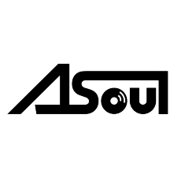

| 首页 | 团体资料 | 成员介绍 | 相关作品 |
简介: A-SOUL是2020年11月23日公开的乐华娱乐旗下虚拟偶像团体，由字节跳动朝夕光年工作室负责技术支持和日常运营，主要于Bilibili和抖音上开展活动 Bilibili: B站官号名称为A-SOUL_Official，团里有谜之生物阿草，设定为嘉然的宠物。因为阿草形象经常在官号出镜，多被粉丝将其与工具人绑定。官号设立初期主要视频均为团播剪辑切片，然而阿草已经摆烂很久没有更新了，现主要为重大发表及活动相关的视频发布也用于接到工商时到对方评论区臊皮。每周二会在B站官号发布本周的直播预告，同时也会发布每周QA（2022年7月12日开始改为半月一次QA）阿草的太极教室来回答粉丝们提出的问题与建议接受粉丝们的狂暴鸿儒“小伙伴你好，对不起”。五位成员的B站账号现用于发布直播切片、发布动态与一个魂们互动。 抖音: 抖音平台个人号原用于发布个人短视频，从2021年11月30日开始，转在新IP号@A-SOUL脑洞波发布短视频个，人号除商业合作内容外，无限期暂停更新。 |
 A-SOUL LOGO |